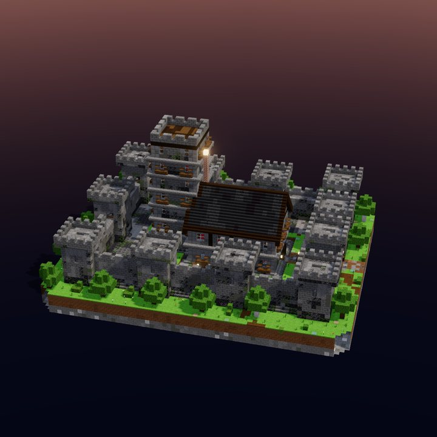
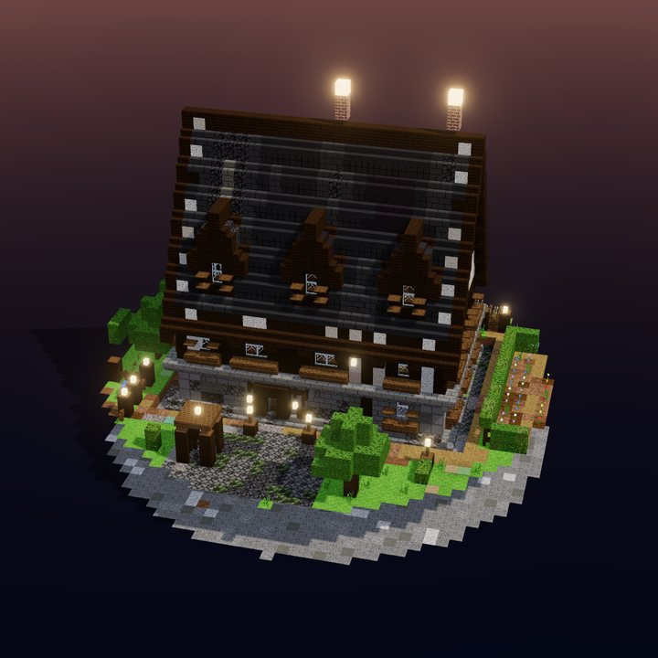
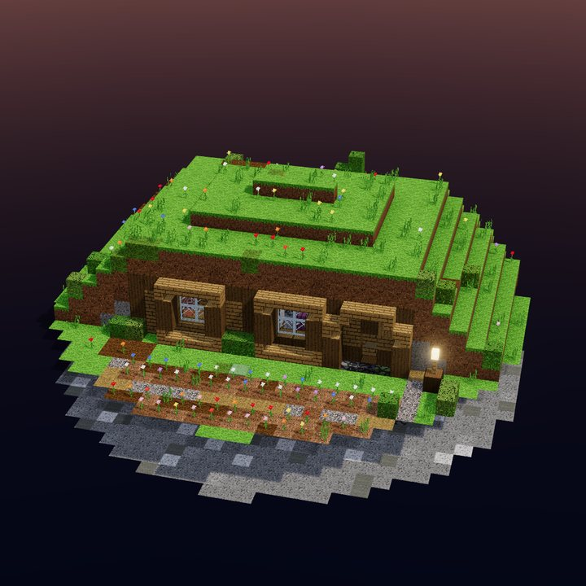
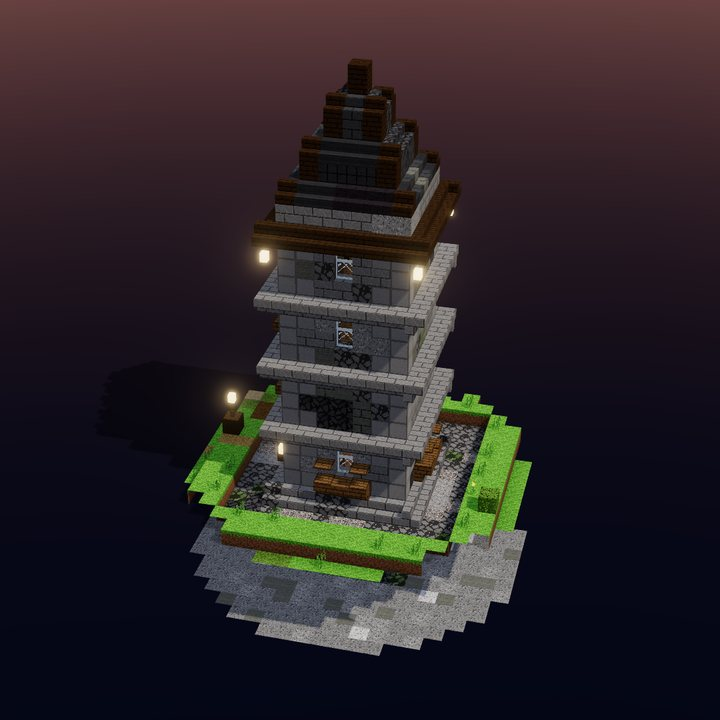
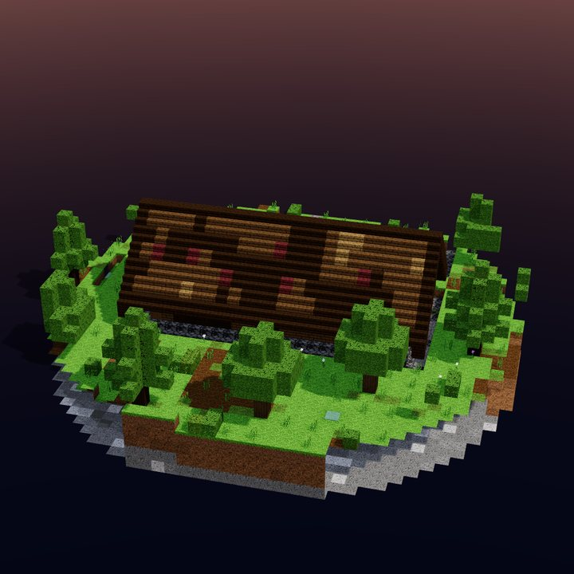
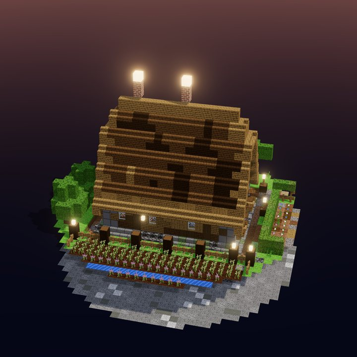

Litematica
Datei in den Ordner schematics legen, laden und als Hologramm in die Welt setzen. Im Survival baust du Block für Block nach, die Materialliste zeigt, was noch fehlt.
Beschreib deine Base in einem Satz oder male sie Raum für Raum. Du bekommst sie fertig eingerichtet, direkt für deine Welt.
Küche hier, Schlafzimmer daneben, die Schmiede ans Ende. Du ziehst Räume auf wie auf Karopapier. Mehr Planung braucht es nicht.
Wände ziehen hoch, Fenster setzen sich, Möbel finden ihren Platz, das Dach schließt sich. Was sonst einen ganzen Abend kostet, steht, bevor der Kaffee fertig ist.
Wo gebraut wird, steht der Braustand. Wo gelesen wird, stehen Regale. Wo geschlafen wird, das Bett mit der Truhe daneben. Nichts ist nur Kulisse, alles lässt sich im Spiel benutzen.
Mittelalterlich aus Stein, nordisch aus dunklem Holz, rustikal oder mit Fachwerk. Derselbe Plan bekommt ein ganz anderes Gesicht.
Gelände, Felder und Gärten, ein Mauerring mit Türmen und Tor. Die Umgebung wächst mit und passt zum Haus.
Jeder Raum ist beleuchtet, Wege und Tor auch. Wenn die Sonne untergeht, bleiben die Zombies draußen.
Die Base kommt als Datei, die gängige Bau-Mods und Minecraft selbst lesen. Du entscheidest, ob du sie nachbaust oder sofort einfügst.
Datei in den Ordner schematics legen, laden und als Hologramm in die Welt setzen. Im Survival baust du Block für Block nach, die Materialliste zeigt, was noch fehlt.
Mit //schem load laden und mit //paste einfügen. Die ganze Base steht in einem Augenblick, auch auf Servern.
Ganz ohne Mods: Datei in den Strukturordner der Welt legen und mit /place template einfügen. Der Strukturblock selbst lädt höchstens 48 × 48 × 48 Blöcke.
Ein echtes Haus aus dem Generator, live in deinem Browser. Dreh es, wechsle den Stil, nimm das Dach ab oder lass die Nacht kommen.
Keine Lust auf Grundrisse? Wähle einen Bautyp, und der Generator entwirft ihn für dich. Gefällt er dir nicht, würfelst du neu.
Alle Bauten in der Galerie ansehen





Plan in Ruhe, bau mit dem Hologramm nach. Du weißt vorher, welche Materialien du brauchst, und musst nichts improvisieren.
Ein Spawn-Dorf, eine Taverne, ein Händlerviertel: Ganze Siedlungen stehen, ohne dass dein Team wochenlang baut.
Ideen ausprobieren, Stil wechseln, neu würfeln. Du kuratierst und veredelst, statt jede Wand von Hand zu ziehen.
Nein. Nookwright ist ein unabhängiges Werkzeug und nicht mit Mojang oder Microsoft verbunden. Es erzeugt Dateien, die Minecraft und gängige Bau-Mods lesen können.
Für die Java Edition, aktuell 1.21.11 und 26.3. Beim Export wählst du die Version deiner Welt.
Nicht unbedingt. Mit /place template und der .nbt-Datei geht es ganz ohne Mods. Für große Basen empfehlen wir Litematica oder WorldEdit.
Ja. Mit Litematica siehst du die Base als Hologramm in deiner Welt und baust sie Block für Block nach. Die Materialliste zeigt dir, was noch fehlt.
Nein. Betten, Truhen, Öfen, Werkbänke und Braustände sind echte Blöcke, die du im Spiel benutzen kannst. Der Generator stellt sie so, dass man gut an sie herankommt.
Er liest daraus Bautyp, Größe, Stil, Dach und Lage und zeigt dir, wie sicher er sich bei jeder Angabe ist. Gebaut wird danach im Editor, auf deinem Gerät. Was mit dem Text passiert, steht im Datenschutz.
Editor und KI-Architekt laufen schon jetzt als Beta im Browser. Ob und was Nookwright später kostet, sagen wir vor dem offiziellen Start.
Beschreib sie in einem Satz oder mal sie Raum für Raum. Der Editor läuft direkt im Browser, ohne Konto und ohne Installation.
Eine Warteliste gibt es noch nicht, und diese Website speichert keine E-Mail-Adressen. Fragen, Wünsche für Bautypen oder einen Fehler gefunden? Schreib uns an hello@quershift.com.
Jeder Bau hier ist echte Ausgabe des Generators: aus einem Bautyp oder einem gemalten Grundriss, mit Seed reproduzierbar. Ansehen, drehen, herunterladen und in deine Welt legen.
Ein Satz genügt: Gebäudeart, Größe, Stil, Dach, Lage. Der KI-Architekt macht daraus einen Bauplan, und der Generator baut ihn im Editor – eingerichtet, beleuchtet und direkt exportierbar.
In deinen Worten, auf Deutsch oder Englisch: welche Gebäudeart, wie groß, welcher Stil, welches Dach, wo es steht.
Das Entscheidungsmodell JEV wählt die passenden Werte aus dem Katalog des Generators und zeigt dir, wie sicher es sich bei jeder Angabe ist.
Im Editor, auf deinem Gerät: Möbel an sinnvollen Plätzen, beleuchtet, exportierbar. Du kannst alles weiter anpassen.
Deine Beschreibung geht an unseren Server und, falls dort eingerichtet, zur Auswertung an den Anbieter des Entscheidungsmodells. Bitte gib keine persönlichen Daten ein. Mehr dazu im Datenschutz.
Was schon geht, was als Nächstes kommt und was wir uns für später vorgenommen haben. Reihenfolge und Umfang können sich ändern.
Wir lieben es, in Minecraft zu bauen. Wir lieben es weniger, zum hundertsten Mal Truhen zu sortieren und Fackeln zu setzen. Deshalb bauen wir ein Werkzeug, das den mühsamen Teil übernimmt, damit der schöne Teil mehr Platz bekommt.
Ein Bett, das man nicht erreicht, ist Deko. Der Generator prüft, dass Möbel benutzbar, Räume erreichbar und Ecken beleuchtet sind.
Der Editor läuft in deinem Browser. Deine Projekte bleiben bei dir, und jeder Bau ist eine offene Datei, die du in jede Welt mitnehmen kannst.
Jeder Bau hat einen Seed. Gleicher Seed, gleicher Bau – ideal zum Teilen, Vergleichen und gemeinsamen Weiterbauen.
Nookwright ist ein Produkt der Quershift Technologies GmbH aus Frankfurt am Main und kein offizielles Minecraft-Produkt. Wir verwenden keine Texturen, Logos oder anderen Inhalte von Mojang. Die Bilder auf dieser Seite zeigen echte Ausgabe unseres Generators mit eigenen Pixeltexturen.
Logo, Farben und Kurzbeschreibung für deinen Bericht. Bilder, Interviews und Testzugänge bekommst du auf Anfrage.
Das Würfel-Haus. Bitte nicht verzerren, einfärben oder mit Mojang-Logos kombinieren.
Unbounded (Überschriften), Inter (Text), JetBrains Mono (Details) – alle unter SIL Open Font License.
Nookwright ist ein Generator für eingerichtete Minecraft-Basen. Man malt Räume oder wählt einen Bautyp, und das Werkzeug baut daraus eine fertige, spieltaugliche Base mit Möbeln, Dach, Gelände und Beleuchtung. Die Base lässt sich als .litematic, .schem oder .nbt exportieren und direkt in die eigene Welt legen. Nookwright läuft im Browser, ist ein Produkt der Quershift Technologies GmbH (Frankfurt am Main) und kein offizielles Minecraft-Produkt.
Bilder aus dem Generator, einen kurzen Produktfilm und Beiträge für soziale Netzwerke schicken wir dir auf Anfrage: hello@quershift.com, Betreff „Presse“.
Pflichthinweis bei Veröffentlichung: „NOT AN OFFICIAL MINECRAFT PRODUCT. NOT APPROVED BY OR ASSOCIATED WITH MOJANG OR MICROSOFT.“
Fragen, Ideen für Bautypen, Fehler im Generator oder Interesse an einer Zusammenarbeit: Wir lesen alles. Nookwright ist ein Produkt der Quershift Technologies GmbH aus Frankfurt am Main.
Interviews, Testzugänge, Material. Bitte „Presse“ in den Betreff.
Ein Konto ist optional. Bauen, speichern und exportieren kannst du sofort im Editor.
Anmeldung wird geladen …
Deine Bauten bleiben auf deinem Gerät. Das Konto synchronisiert derzeit keine Projekte.
Im Editor bauenFür die Anmeldung verwenden wir Clerk. Details im Datenschutz.
Nookwright ist ein Produkt der Quershift Technologies GmbH.
Maximilian Friedrich Dickel, Justus Felix Dickel, Elias Jelinek
E-Mail: hello@quershift.com
Amtsgericht Frankfurt am Main, HRB 141849
Umsatzsteuer-Identifikationsnummer gemäß § 27a UStG: DE460152662
Maximilian Friedrich Dickel, Justus Felix Dickel, Elias Jelinek, Frankfurt am Main (Anschrift wie oben)
Wir sind nicht bereit und nicht verpflichtet, an Streitbeilegungsverfahren vor einer Verbraucherschlichtungsstelle teilzunehmen.
Wir haften für eigene Inhalte nach den allgemeinen Gesetzen. Wir sind nicht verpflichtet, übermittelte oder gespeicherte fremde Informationen zu überwachen. Für externe Links sind ihre Betreiber verantwortlich; bei Kenntnis von Rechtsverstößen entfernen wir sie.
Für den veröffentlichten Quellcode gilt die GNU AGPL 3.0. Die eigenen Galerie-Bauten stehen unter CC BY 4.0. Details zu Software, Bildern, Schriften und Bibliotheken findest du im Lizenzumfang und den Drittanbieter-Hinweisen.
NOT AN OFFICIAL MINECRAFT PRODUCT. NOT APPROVED BY OR ASSOCIATED WITH MOJANG OR MICROSOFT. „Minecraft“ ist eine Marke von Mojang AB.
Stand: 30. September 2026. Konten sind optional; Projekte werden auf deinem Gerät gespeichert.
Der Editor berechnet Bauten vollständig auf deinem Gerät. Projekte speichern wir nicht auf unseren Servern: Sie liegen im Speicher deines Browsers (localStorage) oder in Dateien, die du selbst herunterlädst. Wenn du dein eigenes Minecraft-JAR für die Texturvorschau lädst, wird es nur lokal gelesen und nicht hochgeladen; auf Wunsch wird ein Cache im Browser (IndexedDB) angelegt, den du jederzeit löschen kannst. Die einzige Ausnahme sind Beschreibungen, die du abschickst (nächster Abschnitt).
Wenn du im KI-Architekten, im Beschreibungsfeld der Startseite oder im Editor unter „Beschreibe dein Gebäude“ eine Beschreibung abschickst, geht dieser Text an unseren Server. Ist dort ein Entscheidungsmodell eingerichtet, leitet der Server den Text zur Auswertung an dessen Anbieter weiter: das Entscheidungsmodell JEV von TypeSafe, je nach Einstellung direkt oder über OpenRouter. Übertragen wird nur der Text, nicht deine IP-Adresse. Ist kein Modell eingerichtet oder gerade nicht erreichbar, wertet unser Server den Text selbst aus, und er verlässt den Server nicht. Liegt die Website ohne unseren Server auf einem reinen Datei-Hosting, erkennt der Editor die Beschreibung in deinem Browser, und es wird nichts übertragen.
Beschreibungen protokollieren wir standardmäßig nicht; das Zugriffsprotokoll des Servers enthält weder den Text noch Schlüssel. Bitte gib in Beschreibungen keine personenbezogenen Daten ein. Rechtsgrundlage, Anbieter und Speicherdauer beim Modellanbieter: [vor Livegang rechtlich prüfen: Art. 6 Abs. 1 lit. b bzw. f DSGVO, Sitz von TypeSafe und OpenRouter, Auftragsverarbeitungsvertrag, Übermittlung in Drittländer, Speicherdauer]
Beim Aufruf der Website verarbeitet der Hosting-Anbieter technisch notwendige Daten wie IP-Adresse, Zeitpunkt und abgerufene Datei (Art. 6 Abs. 1 lit. f DSGVO). Unser Server kann je nach Betriebskonfiguration Zeitpunkt, Pfad, Status, Dauer und IP-Adresse protokollieren; die IP-Adresse dient auch der Begrenzung der Anfragen je Nutzer. Das Hosting für den öffentlichen Betrieb ist noch nicht eingerichtet. [Vor dem Website-Livegang ergänzen: tatsächlicher Hosting-Anbieter, Vertragsgrundlage, gegebenenfalls Drittlandübermittlung und Speicherdauer der Logs.]
Wenn du die Kontoseite öffnest, lädt dein Browser die Anmeldeoberfläche von Clerk und verbindet sich mit der für Nookwright eingerichteten Clerk-Instanz. Dabei fallen technische Verbindungsdaten wie IP-Adresse und Browserinformationen an. Bei einer Registrierung verarbeitet Clerk deine eingegebenen Kontodaten, zum Beispiel E-Mail-Adresse und Anmeldeinformationen, sowie Sitzungsdaten zur Anmeldung und Verwaltung deines Kontos. Projekte und Minecraft-Dateien werden dabei nicht zu Clerk übertragen.
Clerk verwendet technisch notwendige Cookies für die Anmeldung und Sitzungen. Daten deines Kontos werden bis zur Löschung des Kontos verarbeitet; Sicherheits- und gesetzlich erforderliche Aufbewahrungen richten sich nach den Bedingungen des Dienstes. Du kannst dein Konto über „Konto verwalten“ löschen. Informationen zum Anbieter: Clerk-Datenschutzerklärung und Clerk-Cookies. Die Nutzung eines Kontos ist freiwillig; der Editor funktioniert ohne Anmeldung.
Wenn du uns per E-Mail kontaktierst, verarbeiten wir die von dir gesendeten Angaben zur Bearbeitung deiner Anfrage. Eine Warteliste oder ein Newsletter ist nicht angebunden.
Schriften (Unbounded, Inter, JetBrains Mono) und die 3D-Bibliothek three.js liefern wir selbst aus. Die Website stellt dafür keine Anfragen an Google Fonts oder andere Drittanbieter.
Wir setzen keine eigenen Marketing- oder Analyse-Werkzeuge ein. Beim Öffnen der Kontoseite werden die für Clerk notwendigen Anmelde- und Sitzungscookies verwendet. Die optionale Clerk-SDK-Telemetrie ist in unserer Integration deaktiviert. Der Editor speichert Projekte lokal im Browser, wie oben beschrieben.
Du hast das Recht auf Auskunft, Berichtigung, Löschung, Einschränkung der Verarbeitung, Datenübertragbarkeit und Widerspruch sowie das Recht auf Beschwerde bei einer Aufsichtsbehörde.
Kostenlose Open-Source-Beta. Kein Abo und keine Bezahlung erforderlich.
Nookwright wird angeboten von der Quershift Technologies GmbH, Wolfsgangstraße 92, 60322 Frankfurt am Main (siehe Impressum).
Nookwright befindet sich in der Entwicklung. Funktionen können sich ändern, und Fehler sind möglich. Prüfe Bauten vor dem Einfügen in wichtige Welten und lege Sicherungen an.
Du darfst deine erzeugten Bauten in privaten und kommerziellen Welten und auf Servern verwenden, verändern, teilen und veröffentlichen. Dafür verlangen wir keine Zahlung und keine Veröffentlichung deines Projekts unter der Softwarelizenz. Rechte an fremden Vorlagen, Marken oder Spielassets werden dadurch nicht eingeräumt.
Unsere eigenen Galerie-Bauten und ihre Vorschaubilder stehen unter CC BY 4.0. Du darfst sie kostenlos verwenden, verändern und weitergeben, auch kommerziell. Nenne dabei Nookwright / Quershift Technologies GmbH, verlinke die Lizenz und kennzeichne Änderungen. Marken und Minecraft-Spielassets sind hiervon ausgenommen.
Den Quellcode findest du auf GitHub unter GNU AGPL 3.0. Fremde Bestandteile behalten ihre eigenen Lizenzen. Ein kostenloses Konto über Clerk ist optional und synchronisiert derzeit keine Projekte; es gibt keine kostenpflichtigen Kontofunktionen.
NOT AN OFFICIAL MINECRAFT PRODUCT. NOT APPROVED BY OR ASSOCIATED WITH MOJANG OR MICROSOFT. Für die Nutzung von Minecraft gelten die Bedingungen von Mojang.
Für die Nutzung gelten die gesetzlichen Haftungsregeln. Das Angebot befindet sich in der Beta; sichere deine Welt vor dem Import und prüfe die erzeugten Dateien.